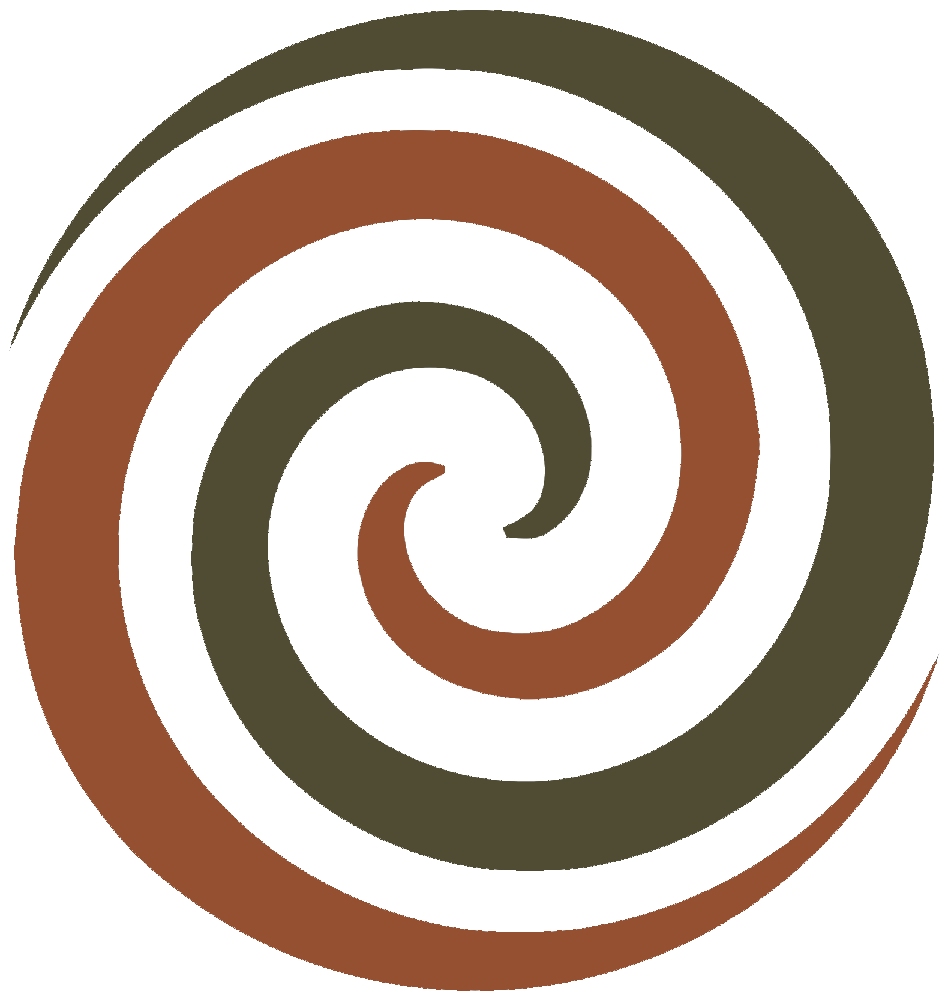
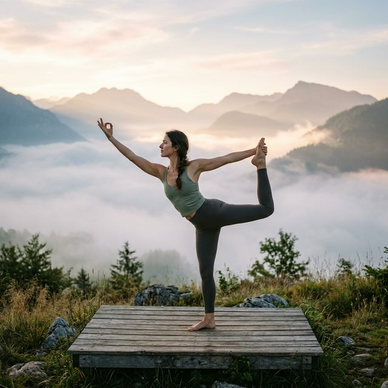
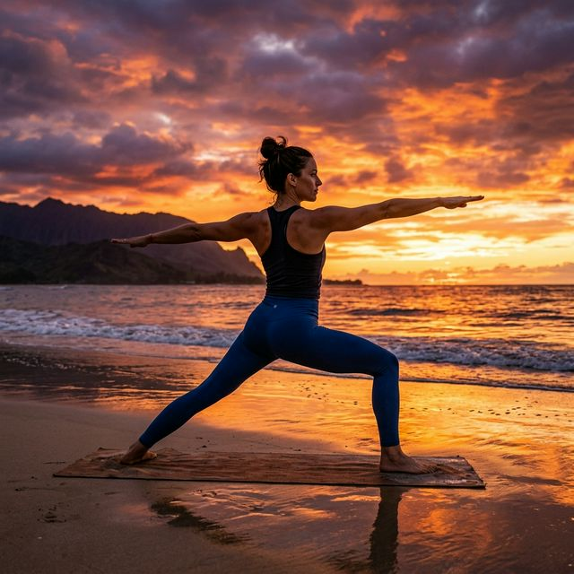
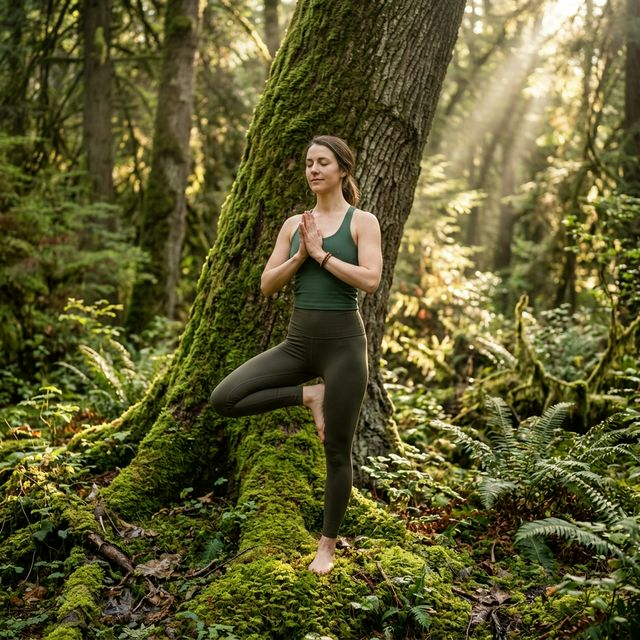
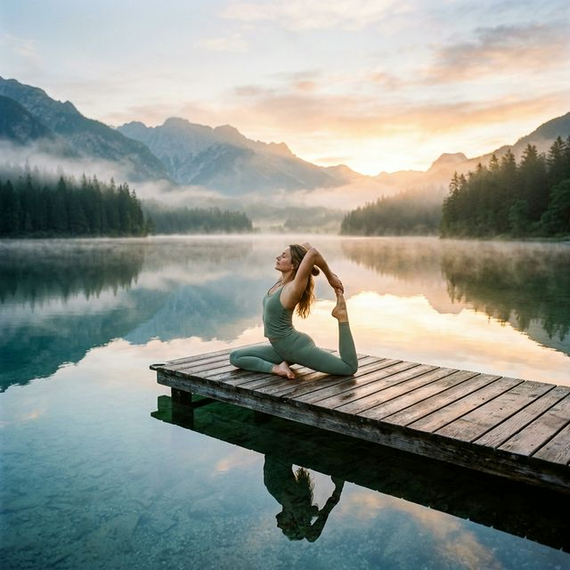
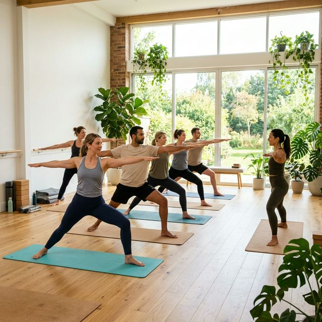

Impacto visual máximo y enfoque en la sensación de inmersión.
Más allá de una secuencia de movimientos, nos enseña que cada gesto, cada paso y cada respiración en nuestra vida tiene un propósito y un lugar sagrado. No es solo moverse; es elegir conscientemente cómo nos movemos a través de nuestra existencia.
Práctica refinada, poderosa y transformadora que llama al cuerpo, la respiración y la mente a trabajar como unidad. Reconocemos la fuerza, la quietud y el balance en la estabilidad.
Fortalece, flexibiliza, equilibra y purifica el cuerpo físico, desarrollando actitudes mentales expansivas que armonizan el cuerpo energético.
Método para explorar las diferentes capas de la mente a través del subconsciente para desarrollar a profundidad la percepción y la mente cósmica.
Regálate 20 minutos de pausa. No para dormir, sino para despertar a una calma que ya vive en ti. A veces, la postura más avanzada es quedarse quieto.
Ordenado, profesional y con jerarquía clara de lectura.

La danza entre el aliento y el espíritu. Cada gesto tiene un propósito, transformando el movimiento en meditación activa.
Dinámico & Fluido
Inspiración editorial con un ritmo visual dinámico.




